Analog Circuit Design
1 Introduction
As the availability of standardized integrated circuit solutions decreases, the demand for tailored, application-specific designs is on the rise Dobkin and Williams (2011). In response to this trend, students participating in the “Concept Engineering Mixed-Technology Systems” course, led by Professor Meiners at The City University of Applied Sciences, have been given the task of designing an Analog-to-Digital Converter (ADC). The aim is to develop a suitable replacement for the Texas Instruments ADS1115, tailored to meet the requirements of a specified measurement system.
The role of data conversion is fundamental in modern electronics. As digital processing technology continues to advance, speeds have reached unprecedented levels, and semiconductor components are now manufactured with nanometer precision, enabling Gigahertz-level data rates as a standard. Despite these technological strides, the physical world remains inherently analog, creating a necessity for reliable conversion techniques to interface analog signals with high-performance digital systems Kester (2005).
In modern mixed-signal circuits, analog signal processing is increasingly complemented by digital signal processing. This shift allows for the use of lower-quality analog components, offset by the complexity and efficiency of digital systems R. J. Baker (2008). From an engineering perspective, this trade-off plays a crucial role in designing high-performance ADCs, where digital compensation techniques can improve accuracy while reducing reliance on precise analog circuitry. As a result, contemporary ADC architectures integrate sophisticated digital algorithms to enhance resolution and dynamic range while minimizing the impact of analog imperfections.
This necessity spans multiple fields, including acoustics, optics, and mechanical sensing. To ensure accurate digital representation of analog data, ADCs must operate with high speed, precision, and reliability, making them critical components in modern electronic applications.
The fundamental concept of interfacing the analog and digital domains is illustrated in Figure 1. The diagram shows the sequential flow from analog input signals, through analog-to-digital conversion, followed by digital data processing, and finally through digital-to-analog conversion to produce an analog output. This process highlights the critical role of reliable data conversion techniques in modern mixed-signal systems.
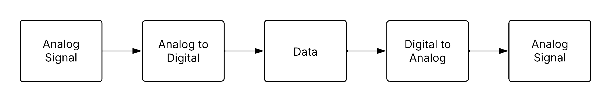
Figure 1: Interfacing Between Analog and Digital Domains.
This report explores one of the most effective ADC architectures: the Sigma-Delta converter. The following sections provide a theoretical overview of ADC operation, analyze key performance characteristics at the system level, and develop foundational circuit models that replicate the desired conversion behavior. Lastly, a detailed circuit design will be presented, verified through SPICE simulations in the xschem design environment, outlining practical implementation strategies for integrated circuit fabrication.
1.1 System Overview
The measurement system under consideration for this semester’s project is a classical mixed-signal architecture designed for precise data acquisition and processing. At its core, the system utilizes an accelerometer as the primary analog sensor, responsible for capturing physical acceleration data from the environment. This analog signal is inherently continuous and requires conversion into the digital domain to enable efficient processing, analysis, and communication.
To achieve this, the analog output from the accelerometer is fed into an ADC. The ADC performs the crucial task of sampling the continuous analog signal and quantizing it into discrete digital values. These digital signals can then be processed by a microontroller, which serves as the central processing unit for the system. Within the microcontroller, further operations such as filtering, data interpretation, and wireless communication can be performed, depending on the application requirements.
For the hardware implementation of this signal chain, the following components have been selected:
ADXL335 Accelerometer
A low-power, three-axis analog output accelerometer capable of measuring acceleration with a full-scale range of ±3 g. It provides a simple and reliable analog voltage output proportional to acceleration, making it ideal for integration into the system.ADS1115 ADC
A high-precision, 16-bit analog-to-digital converter from Texas Instruments. It features a programmable gain amplifier (PGA) and an I²C-compatible interface, offering excellent resolution and flexibility for capturing low-level analog signals from the accelerometer.ESP8266 Microcontroller
A highly integrated microcontroller with built-in Wi-Fi capability. It not only handles the digital data processing but also enables wireless communication, making it suitable for IoT-based measurement applications.
This system architecture ensures a robust interface between the analog sensing domain and the digital processing domain, highlighting the importance of accurate data conversion and efficient signal processing in modern measurement systems.
The high-level architecture of the described measurement system is illustrated in Figure 2 below. It shows the data flow from the analog accelerometer (ADXL335), through the analog-to-digital converter (ADS1115), and finally to the digital microcontroller (ESP8266) for further processing and communication.
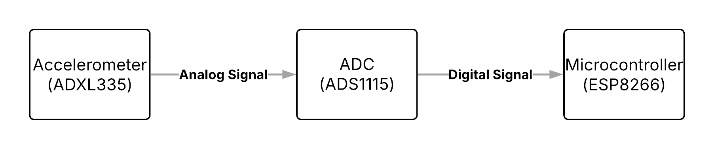
Figure 2: Top-Level Block Diagram of the Measurement System.
In addition to the top-level architecture, the internal structure and functionality of the individual components are shown in the following figures. These diagrams provide insight into the signal flow and the key subsystems involved in the measurement system.
1.1.1 ADXL335 Block Diagram
Figure 3 presents the internal block diagram of the ADXL335 accelerometer. It consists of a three-axis MEMS sensor, followed by an AC amplifier and demodulator stage. Each axis output is then buffered through separate output amplifiers, providing analog voltage signals corresponding to acceleration along the X, Y, and Z axes. These outputs are routed to external filtering components to stabilize the signal.
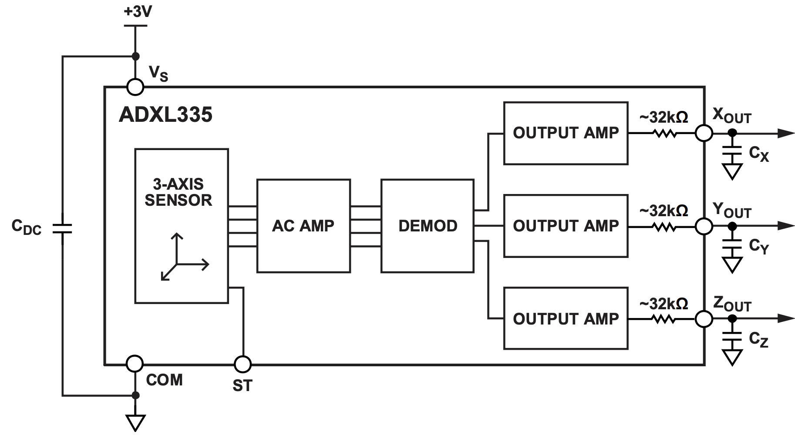
Figure 3: Functional Block Diagram of the ADXL335 Accelerometer Analog Devices (2019)
1.1.2 ADS1115 Block Diagram
Figure 4 illustrates the functional block diagram of the ADS1115 Analog-to-Digital Converter. The ADC features a multiplexer (MUX) that allows for the selection between multiple input channels, followed by a programmable gain amplifier (PGA). The 16-bit delta-sigma ADC performs high-resolution conversion of the input signal. An internal voltage reference, oscillator, and I²C interface facilitate accurate conversion and communication with external devices. The comparator and ALERT/RDY functionality provide additional flexibility for system integration.
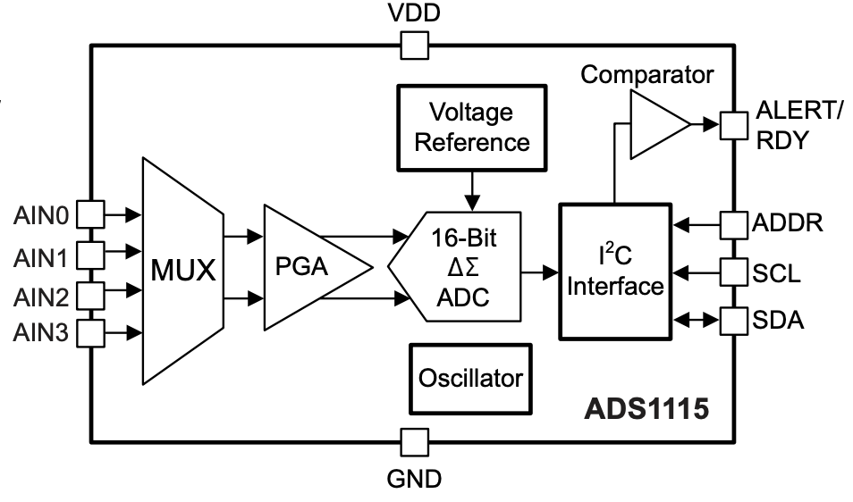
Figure 4: Functional Block Diagram of the ADS1115 ADC. Texas Instruments (2015)
1.1.3 ESP8266 Pinout Diagram
Finally, Figure 5 displays the ESP8266 microcontroller module pinout. This microcontroller includes GPIO pins, I²C and SPI communication interfaces, and a built-in Wi-Fi module. The diagram highlights the various available digital interfaces for connecting to peripheral devices, as well as power and ground connections necessary for integration into the system. The ESP8266 is responsible for receiving the digital data from the ADS1115 and handling subsequent processing and wireless communication.
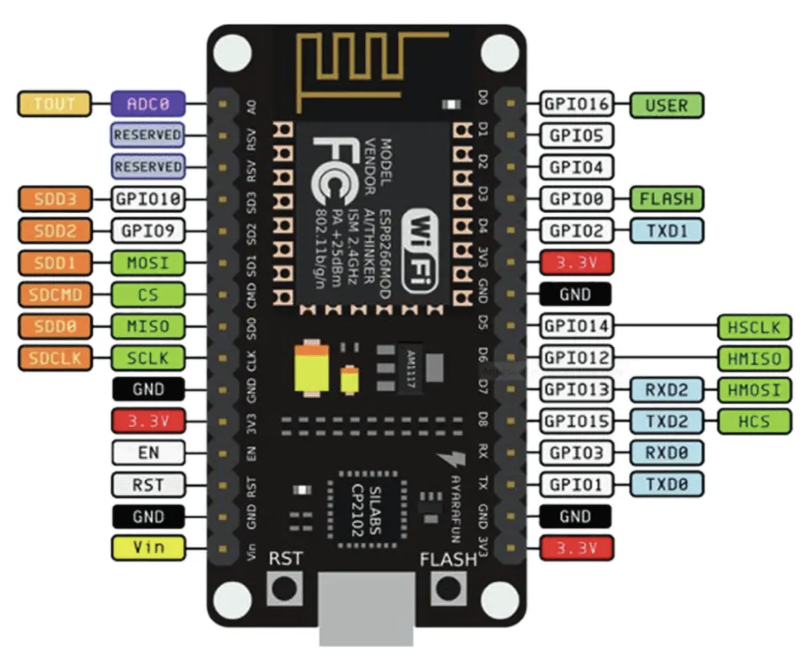
Figure 5: Pinout Diagram of the ESP8266 Microcontroller. Techrm (2022)
2 Analog-to-Digital Converter
In an increasingly digitalized world, microprocessors and digital systems form the core of almost all modern control and communication systems. Whether in smartphones, industrial automation, or high-speed networks, digital processors handle central computing tasks and make real-time decisions. However, while processing occurs purely in the digital domain, the physical world remains analog. Sensors, actuators, and other external devices generate continuous analog signals that must first be converted into a discrete form for digital processing (Bajdechi 2004).
This is where mixed-signal systems come into play, bridging the gap between the analog and digital domains. As the “brain” of nearly every control and communication system, the digital processor interacts with the external world through analog-to-digital converters (ADCs) for receiving analog signals and digital-to-analog converters (DACs) for sending analog outputs (Bajdechi 2004).
As shown in Figure 1, the general block diagram of an ADC designed for converting low-pass signals consists of an anti-aliasing filter, a sampler, and a quantizer (Rosa and Río 2013).
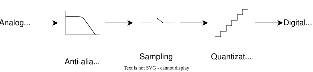
2.1 Sampling
A set of key components is essential for converting an analog signal into a discrete-time representation. A fundamental aspect of this process is sampling, as it ensures the conversion of an analog signal into a discrete-time signal (Bajdechi 2004).
In practical applications, sampling can occur in one of three modes. If the highest frequency present in the signal is limited to \(f_{\max}\), the sampling approaches are categorized as follows (Williams and Taylor 2006):
- Critically sampled: \(f_s = 2 f_{\max},\)
- Oversampled: \(f_s > 2 f_{\max},\)
- Undersampled: \(f_s < 2 f_{\max}.\)
Critical sampling refers to setting the sampling rate to the lowest possible value that still satisfies the sampling theorem. If this condition is not met, aliasing occurs, preventing accurate reconstruction of the input signal due to overlapping frequency components. To ensure that the highest frequency of the analog signal remains below the Nyquist frequency, an analog prefilter - known as an anti-aliasing filter - is typically placed between the signal source and the ADC. A well-designed anti-aliasing filter effectively attenuates signal energy above the Nyquist frequency. In practice, the input signal is often affected by noise, which may contain frequency components outside the desired range. Therefore, it is also essential that the filter removes out-of-band noise, as it could otherwise alias into the signal band after sampling and degrade the quality of the sampled values (Pavan, Schreier, and Temes 2017). Undersampling can occur either deliberately or unintentionally. In both scenarios, the sampling rate is chosen to be lower than the Nyquist frequency. As a result, aliasing takes place (Williams and Taylor 2006).
Furthermore, it is important to note that sampling results in a periodic repetition of the spectrum. The following example illustrates this:
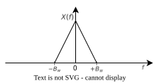
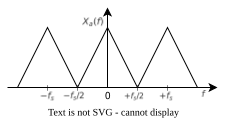
If the conditions of the sampling theorem are met, the input signal can be fully reconstructed by filtering with an ideal low-pass filter with a cutoff frequency \({{\omega_g}}\) and an amplitude of \({{T_a}}\) (Goldenbaum 2022):
\[ H_{AAF}(\omega) = T_a \, \operatorname{rect}(\omega / 2\omega_g). \tag{1} \]
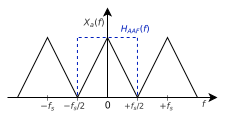
In the frequency domain, an ideal low-pass filter with a specific cutoff frequency is used to fully reconstruct the signal. Since this corresponds to a multiplication with a rectangular function in the frequency domain, it results in a convolution with the sinc function in the time domain. The sinc interpolation is a series expansion in which the maxima of the individual sinc functions coincide with the sampled values. Each sample point is associated with a corresponding sinc function. Consequently, the original function can be reconstructed as a weighted sum of sinc functions, where each sample value corresponds to a sinc function shifted by the sampling period \(T_a\). The superposition of these sinc functions then reconstructs the original function (Meyer 2019).
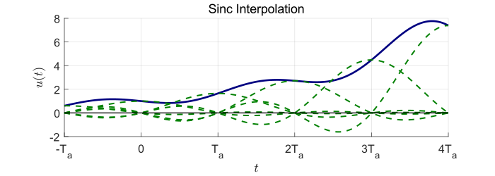
2.2 Quantization
Quantization is a nonlinear, memoryless operation (Pavan, Schreier, and Temes 2017). It refers to the conversion of a continuous-valued signal into a signal with a finite set of values (Goldenbaum 2022). Unlike the sampling process, quantization is an irreversible operation, leading to a loss in the resolution of the digitized signal (Rosa 2011).
The quantization operator is typically described by a quantization characteristic:
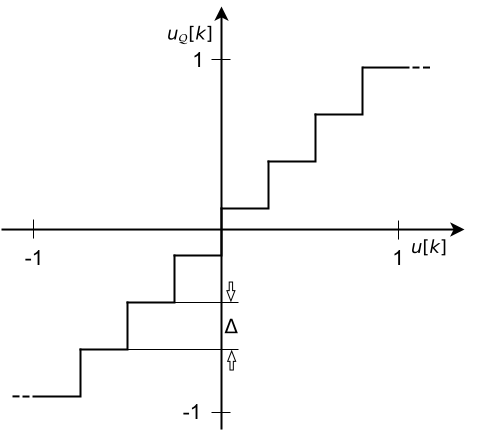
The quantization level \(Q\) defines the respective quantization intervals. These intervals are determined by the word length \(q\) (also referred to as the bit width). The relationship is given by \(Q = 2^q\). The greater the word length, the more quantization intervals exist. This means that the quantization becomes more precise, as the difference between the actual value and the quantized value continuously decreases (Goldenbaum 2022).
The delta (\(\Delta\)) represents the accuracy and is defined as \(\Delta = 2/Q\). This implies that as \(Q\) increases, the word length \(q\) also grows, and \(\Delta\) becomes smaller. Since the step size between quantization levels decreases, the resolution improves (Goldenbaum 2022). After quantization, digital signals are generated. Each quantization interval is assigned a unique code number.
The quantization process also imposes a limitation on the performance of an ideal ADC, as an error is introduced during the conversion of the input signal from a continuous to a discrete amplitude representation. This error, commonly known as quantization error, will be discussed in more detail in a later chapter.
3 Delta-Sigma ADCs
The general block diagram of a Delta-Sigma ADC is as follows:
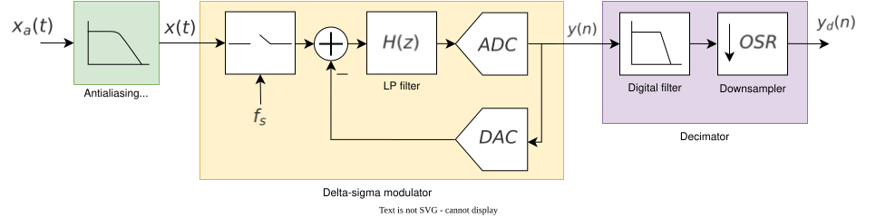
The topology includes an antialiasing filter, which band-limits the analog input signal to prevent aliasing during subsequent sampling. Oversampling significantly reduces the attenuation requirements of the AAF, allowing for smoother transition bands compared to Nyquist-rate ADCs. The central block, the Delta-Sigma modulator, performs oversampling and quantization of the band-limited analog signal. The quantization noise of the embedded quantizer is shaped in the frequency domain by introducing an appropriate loop filter \(H(z)\) before it and enclosing them within a negative feedback loop. The decimation filter applies a highly selective digital filter to sharply remove out-of-band spectral components from the Sigma-Delta output, effectively eliminating most of the shaped quantization noise. Additionally, the decimator reduces the data rate from \(f_s\) down to the Nyquist frequency while increasing the word length (Rosa and Río 2013).
3.1 System Overview
A Delta-Sigma converter operates as a 1-bit sampling system, where an analog input signal is sampled multiple times through oversampling. At its core, the Delta-Sigma modulator converts the analog signal into a high-speed, single-bit pulse stream while shaping the quantization noise. The modulator can be analyzed in both the time domain and frequency domain.
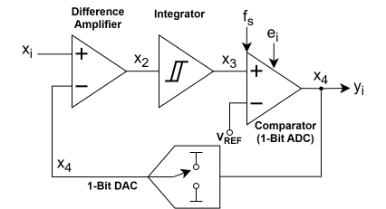
Figure 8 depicts the time-domain representation of the modulator. It consists of a difference amplifier, an integrator, and a comparator, with a feedback loop incorporating a 1-bit DAC.
The system continuously calculates the difference between the input signal and a feedback signal, emphasizing changes rather than absolute values. This difference signal is then integrated, influencing the output direction. When the integrator output reaches the comparator threshold, the 1-bit ADC quantizes it into a binary value. The output is fed back through a 1-bit DAC, creating a closed-loop system that shapes the noise and stabilizes the signal. The resulting pulse waveform represents the input signal, and when averaged over time, it approximates the original analog input (B. Baker 2011b). The DAC functions as a simple switch that connects the negative input of the difference amplifier to either a positive or negative reference voltage. Its primary role is to keep the integrator’s average output near the comparator’s reference level (Integrated 2003).
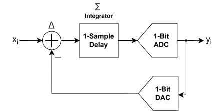
In the frequency domain, the combiFnation of integration and oversampling functions as a noise-shaping filter, enabling high-resolution conversion by pushing noise outside the signal band.
Thanks to these characteristics, Delta-Sigma ADCs are widely used in applications requiring high accuracy, such as audio processing, sensor technology, and precision measurements .
The name Delta-Sigma originates from the key mathematical operations performed in the modulator.
- Delta (Δ) represents the difference operation. The system continuously calculates the difference between the input signal and the feedback signal, ensuring that it tracks changes rather than absolute values. This differentiation process helps in shaping the quantization noise.
- Sigma (Σ) refers to accumulation (or integration). After computing the difference, the error signal is integrated over time, effectively summing past values. This process shapes the noise spectrum, reducing in-band noise while pushing most of it to higher frequencies.
Some sources use the term Sigma-Delta instead of Delta-Sigma, emphasizing the integration first. However, both terms describe the same modulation technique.
3.2 Fundamental Concepts
A Delta-Sigma ADC leverages advanced signal processing techniques to achieve higher resolution than conventional ADCs. Oversampling increases the sampling rate beyond the Nyquist frequency, spreading quantization noise over a wider frequency range. Noise shaping further pushes this noise into higher frequencies, where it can be effectively removed by digital filtering. Finally, decimation reduces the sample rate while preserving the signal’s integrity, resulting in a high-precision digital output.
3.3 Oversampling
If an ADC operates faster than \(2f_{\text{max}}\), it is considered an oversampled ADC. In this case, the oversampling ratio (OSR) is a design parameter that indicates how many times \(f_s\) is larger than the minimal value required by the Nyquist theorem.
\[ OSR = \frac{f_s}{2 f_{\text{max}}}, \tag{2} \]
where \(f_{\text{max}}\) is the maximum signal frequency, which is the signal bandwidth (Pavan, Schreier, and Temes 2017).
Oversampled A/D converters impose significantly less stringent requirements on the filter compared to Nyquist rate converters, as the signal is sampled at a frequency that far exceeds its bandwidth (Boser and Wooley 1988). One advantage of oversampling ADCs is that they simplify the requirements for the AAF. It is important to note that the AAF for a Nyquist converter must have a sharp transition band, which often results in phase distortion for signal components near the cut-off frequency (Rosa 2011).
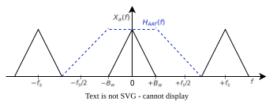
However, oversampling has another effect that must be considered: noise. This phenomenon, known as quantization noise, arises for the following reason: while the ADC input is a continuous signal with an infinite range of possible values, the digital output is discrete, with the number of distinct states determined by the converter’s resolution. As a result, the analog-to-digital conversion process inevitably discards some information, introducing a certain degree of distortion into the signal. The associated error varies randomly, with a magnitude of up to ±1 LSB (Clifford 2016). The following Figure shows the signal with a quantization noise:
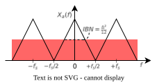
In practice, an ideal quantizer is often described using a linear model, provided that certain assumptions about the statistical properties of the quantization error hold. The quantization error \(e(n)\) is directly dependent on the quantizer input signal \(q(n)\), as shown in the following Figure (Rosa and Río 2013).
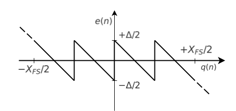
If \(q(n)\) is considered to vary randomly from sample to sample within the interval \([-\Delta/2, +\Delta/2]\), the quantization error \(e(n)\) will also be uncorrelated between successive samples. Under these assumptions, the quantization error can be represented as a random process following a uniform probability distribution within the range \([-\Delta/2, +\Delta/2]\), as shown in the following Figure (Rosa and Río 2013).
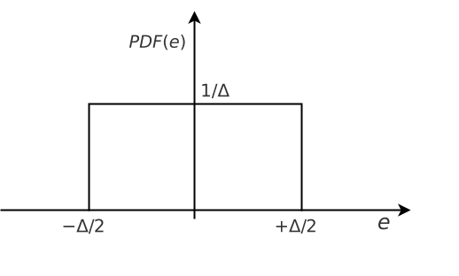
Before sampling, quantization noise exhibits characteristics similar to white noise in the frequency domain, maintaining a constant power spectral density across the entire frequency range. The power associated with the quantization error can thus be computed as (Rosa and Río 2013):
\[ \overline{e^2} = \sigma_e^2 = \int_{-\infty}^{\infty} e^2 \, \text{PDF}(e) \, de = \frac{1}{\Delta} \int_{-\Delta/2}^{+\Delta/2} e^2 \, de = \frac{\Delta^2}{12}. \tag{3} \]
The former assumption implies that the power of the quantization error will also be uniformly distributed in the range \([-f_s/2, +f_s/2]\), yielding (Rosa and Río 2013):
\[ \overline{e^2} = \int_{-\infty}^{\infty} S_E(f) \, df = S_E \int_{-f_s/2}^{+f_s/2} df = \frac{\Delta^2}{12}, \tag{4} \]
so that the power spectral density (PSD) of the quantization error in this range is:
\[ S_E = \frac{\overline{e^2}}{f_s} = \frac{\Delta^2}{12 f_s}.\tag{5} \]
These assumptions are referred to as the additive white noise approximation of the quantization error. They allow a quantizer, which is inherently deterministic and nonlinear, to be represented using a random linear model. This model is expressed as (Rosa and Río 2013):
\[ y(n) = k_q(n) + e(n) \tag{6} , \]
where \(e(n)\) represents the quantization noise.
Using this approximation of quantization error as white noise, the performance of ideal ADCs can be easily evaluated. In a Nyquist ADC, where \(f_s = 2 f_{\text{max}}\), all the quantization noise power remains within the signal band and appears at the ADC output as part of the input signal itself, as illustrated in the Figure “FFT diagram of a multi-bit ADC (Integrated 2003)”.
Conversely, if an oversampled signal is quantized, only a fraction of the total quantization noise power lies within the signal band, as illustrated in the following Figure:
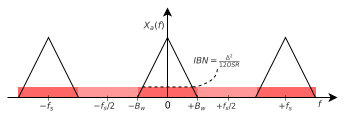
While the SNR remains unchanged, the noise energy is now distributed across a broader frequency range (Integrated 2003). The in-band noise power (IBN) caused by the quantization process in an ideal oversampling ADC is thus (Pavan, Schreier, and Temes 2017):
\[ \text{IBN} = \int_{-f_{\text{max}}}^{+f_{\text{max}}} S_E(f) \, df = \int_{-f_{\text{max}}}^{+f_{\text{max}}} \frac{\Delta^2}{12 f_s} \, df = \frac{\Delta^2}{12 \text{OSR}} \tag{7}, \] where \(S_E(f)\) is the quantization error power spectral density, \(\Delta\) is the quantization resolution, \(f_s\) is the sampling frequency, and OSR represents the oversampling ratio (Pavan, Schreier, and Temes 2017).
Note that the SNR for a 1-bit ADC is 7.78 dB (6.02 + 1.76). Each factor-of-4 oversampling increases the SNR by 6 dB, and each 6 dB increase corresponds to gaining one additional bit of resolution. A 1-bit ADC with 24× oversampling can achieve a resolution of four bits. However, achieving 14-bit resolution would require oversampling by a factor of \(4^{15}\), which is impractical (Integrated 2003).
Sigma-delta converters address this limitation through noise shaping, a technique that enables a gain of more than 6 dB per factor-of-4 oversampling (Integrated 2003).
3.4 Noise shaping
To further improve the conversion resolution at the same sampling frequency \(f_s\) and with the same number of ADC bits, noise shaping can be applied. This is accomplished by high-pass filtering the quantization noise to displace most of its power from low frequencies, where the input signal spectrum resides, to higher frequencies near \(f_s/2\) (Bajdechi 2004), ensuring that most of its power is moved outside the signal band (Rosa and Río 2013).
To understand quantization noise, the system can be analyzed from different perspectives. Starting with Figure 8, the 1-bit DAC in the feedback loop can be observed. The primary role of the feedback DAC is to keep the integrator’s average output near the comparator’s reference level. The density of ones at the modulator output is proportional to the input signal. As the input increases, the comparator generates a higher number of ones, and conversely, for a decreasing input, fewer ones are produced. By summing the error voltage, the integrator acts as a low-pass filter for the input signal and a high-pass filter for the quantization noise. As a result, most of the quantization noise is shifted to higher frequencies (Integrated 2003). The discrete-time representation highlights the quantization noise shaping effect. The modulator output consists of the input signal plus the difference between consecutive quantization errors, expressed as \(e_i - e_{i-1}\). As the formula shows, the quantization noise is the differnce between the current quantization error \(e_i\) and the previous quantization error \(e_i-1\).
The system is illustrated in the frequency domain in Figure 9. It shows that the combination of the integrator and sampling strategy implements a noise-shaping filter on the digital output code. In the frequency domain, the time-domain output pulses appear as the input signal (or spur) and shaped noise. The noise characteristics are the key to understanding the modulator’s frequency operation and the ability of the Delta-Sigma ADC to achieve such high resolution.
3.4.1 Linear Model
To better understand noise shaping, it is also useful to refer to a linear model.
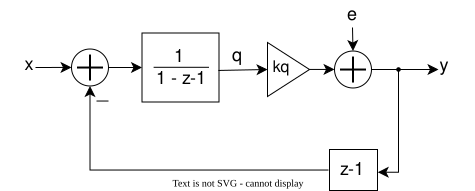
Figure 16 shows a negative feedback system. Here, \(k_q\) refers to the gain factor of the quantization error and can be chosen arbitrarily in the case of a 1-bit quantizer. The model aims to improve the understanding that the goal is to have a frequency-dependent gain. This gain should be infinite at low frequencies so that the NTF has a small magnitude at low frequencies. The lowest-order system with these characteristics is an integrator (Pavan, Schreier, and Temes 2017)
For the system, we see that:
\[ Y(z) = 1 X(z) + (1 - z^{-1}) E(z).\tag{8} \]
Here, 1 is the signal transfer function (STF), NTF is the noise transfer function. The STF is unity. The NTF, \((1 - z^{-1})\), represents a first-order high-pass response with a transmission zero at dc (\(\omega\) \(= 0\), or, \(z = 1\)) (Pavan, Schreier, and Temes 2017).
This makes sense since the gain of the forward amplifier is infinite at DC. The logarithmic plot of the magnitude response of the NTF in log scale shows the first-order nature of the high-pass response, increasing at a rate of 20 dB per decade (Pavan, Schreier, and Temes 2017).
\[ \text{IBN} = \frac{\Delta^2}{24\pi} \int_{-\frac{\pi}{OSR}}^{\frac{\pi}{OSR}} |(1 - e^{-j\omega})|^2 d\omega = \frac{\Delta^2}{12\pi} \int_{0}^{\frac{\pi}{OSR}} 4 \sin^2\left(\frac{\omega}{2}\right) d\omega \]
\[ \approx \frac{\Delta^2}{12\pi} \int_{0}^{\frac{\pi}{OSR}} \omega^2 d\omega = \frac{\Delta^2}{36\pi} \frac{\pi^3}{OSR^3}. \]
The in-band noise power decreases proportionally to \(OSR^{-3}\). When the oversampling ratio (OSR) is doubled, the in-band noise power reduces by 9 dB, which results in an effective resolution improvement of 1.5 bits. In contrast, basic oversampling without noise shaping only increases resolution by 0.5 bits for each doubling of the OSR. In principle, achieving high accuracy is possible by selecting a sufficiently large \(OSR\). However, combining oversampling with noise shaping significantly reduces the required OSR value. From a spectral perspective, quantization noise is suppressed at lower frequencies and shifted towards higher frequencies through high-pass filtering. This technique characterizes a first-order noise-shaped converter, commonly referred to as a first-order \(\Delta\Sigma\) converter (Pavan, Schreier, and Temes 2017).
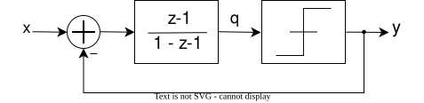
The system diagram of a first-order Sigma-Delta converter is illustrated in Figure 17. The output consists of the input signal \(x\) combined with the quantization error, defined as \(e = y - x\). Consequently,
\[ Y(z) = z^{-1} X(z) + (1 - z^{-1}) E(z). \tag{8} \]
The quantization error is attenuated in the signal band through first-order noise shaping, characterized by the transfer function \((1 - z^{-1})\), which has a zero at DC (Pavan, Schreier, and Temes 2017).
3.5 Second-Order Delta-Sigma Modulation
A modulator that integrates the input signal twice instead of just once is an effective way to reduce in-band quantization noise. Figure 18 illustrates a 1-bit, second-order modulator that uses two integrators instead of one. In this case, the noise term depends not only on the previous error but also on the two preceding errors.
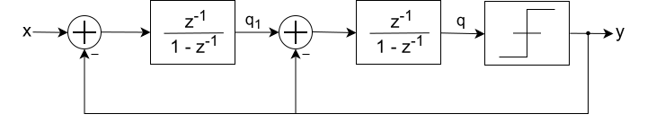
Increasing the resolution and the effective number of bits (ENOB) in a delta-sigma modulator can be achieved by incorporating an additional integrator and feedback path. A linearized analysis in this scenario leads to the expression:
\[ Y(z) = z^{-1} X(z) + (1 - z^{-1})^2E(z). \tag{9} \]
This shows that the noise transfer function (NTF) takes the form (1 - z{-1})2 in the z-domain, applying a shaping function of (2 sin(ω/2))^4 to the power spectral density (PSD). As a result, doubling the oversampling ratio (OSR) leads to an increase of approximately 2.5 bits in resolution. This is a significantly better trade-off compared to a first-order modulator.
By incorporating more integrators and feedback branches within the loop, it is possible to achieve higher-order noise transfer functions. In the case of an L-th order loop filter, the NTF follows the form:
\[ NTF(z) = (1 - z^{-1})^L. \tag{10} \]
Under these conditions, the in-band noise power is given by:
\[ IBN = \frac{\pi^{2L} e^2_{rms}}{(2L + 1) OSR^{2L+1}}. \tag{11} \]
Furthermore, doubling the OSR increases the resolution by approximately (L + 0.5) bits.
The previous discussion suggests that a delta-sigma loop with a carefully chosen, very high-order NTF could, in theory, achieve exceptionally high performance. However, if something sounds too good to be true, it probably is. In practice, high-order loops introduce stability challenges that have not been considered so far. These limitations reduce the achievable resolution to a lower value than the theoretical predictions.
Moreover, second- and higher-order modulators come with additional drawbacks, including increased complexity, multiple feedback loops, and greater design difficulty.
3.6 Digital Filtering
Das 1-bit pwm signal ist für weitere analysen nicht geeignet. Für audioanwendungen verwenden. um audiotreiber zu versorgen. das man das pwm signal als mp3 signal quasi sehen kann und direkt damit eine audiostufe treiben kann. erstmal für analyse nicht praktisch.
The undesirable characteristics of the modulator output include high-frequency noise and a high-speed, 1-bit output rate. Once the signal is in the digital domain, a low-pass digital filter can be applied to attenuate the high-frequency noise, while a decimator filter can be used to reduce the output data rate (B. Baker 2011a).
The digital filter function applies a low-pass filter by first sampling the 1-bit data stream from the modulator. An averaging filter is the most commonly used technique in sigma-delta converters (B. Baker 2011a).
A down-sampler retains every \(M\)-th sample of the input sequence and removes the \(M\) - 1 intermediate samples to generate the output sequence. By removing samples, down-sampling increases the sampling period.
If the input sampling rate is defined as \(F_T = \frac{1}{T}\), then the output sampling rate \(F_M\) is related to \(F_T\) as follows:
\[ F_M = \frac{1}{T_M} = \frac{1}{M T} = \frac{F_T}{M} \tag{12} \]
This means that the sampling rate is reduced by a factor of \(1/M\), meaning that after down-sampling, the new sampling frequency is a fraction of the original rate.
It is also important to examine the frequency-domain relation of a down-sampler. The relationship between input and output in the z-transform domain can be determined by substituting the expression for (X_{}(z)) into (Y(z) = X_{}(z^{1/M})), which results in:
\[ Y(z) = \frac{1}{M} \sum_{k=0}^{M-1} X\left(z^{1/M} W_M^k\right) \tag{13} \]
This equation shows that the output spectrum consists of a sum of \(M\) stretched and shifted copies of the input spectrum, scaled by a factor of \(1/M\).
The output spectrum of a down-sampler with a factor of \(M\) is given by:
\[ Y(e^{j\omega}) = \frac{1}{M} \sum_{k=0}^{M-1} X\left(e^{j(\omega - 2\pi k)/M}\right) \tag{14} \]
Aliasing in \(Y(e^{j\omega})\) is completely avoided if and only if:
\[ X(e^{j\omega}) = 0 \quad \text{for} \quad \frac{\pi}{M} \leq |\omega| \leq \pi \tag{15} \]
This means that \(x[n]\) must be band-limited to \(\pm \pi / M\).
3.7 Decimation
4 Implementation and Analysis of Behavior with MATLAB and Simulink
4.1 System Design
To start with the system design and the analyze of the behaviour the following block diagram in Figure 19 is shown. The modulator topology is a standard CIFB (cascade of integrators, feedback) structure (Schreier, Temes, et al. 2005).
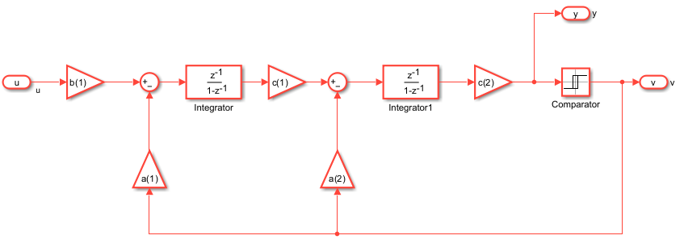
In this model, the parameters are defined as follows:
| Specification | Value |
|---|---|
| System Order (L) | 2 |
| Modulator Topology (form) | CIFB |
| Optimization (opt) | 0 |
| Quantizer Levels (nLev) | 2 (1‑Bit) |
| Sampling Frequency (f_s) | 220 kHz |
| Sampling Time (T_s) | 1 / f_s |
| Oversampling Ratio (OSR, M) | 512 |
| Simulation Length (N) | 16 × M = 8192 |
| Bandwidth (f_B) | f_s / (2 × M) ≈ 215 Hz |
| Sinus Test Cycles | 9 |
| Sinus Frequency (f_x) | cycles × f_s / N |
| Test Signal Amplitude (A) | 0.8 |
| Time Vector (t) | T_s × [0 … N–1] |
| Input Signal (u) | A · sin(2π · f_x/f_s · [0 … N–1]) |
In this model, the parameter L is set to 2, indicating that the DSM is of second order. The topology is defined by form = ‘CIFB’, which specifies the Cascade of Integrator Feedback configuration — a standard structure for delta-sigma designs. The parameters fs and Ts denote the sampling frequency and sampling period, respectively. The oversampling ratio is determined by M = 512, while the simulation length—and consequently the number of FFT points—is set by N = 16 × M. Finally, u represents the sinusoidal input signal for the modulator.
%% Design NTF
H = synthesizeNTF(L, M, opt, 2);
[a, g, b, c] = realizeNTF(H, form);
b(2:end) = 0;
ABCD = stuffABCD(a, g, b, c, form);
[ABCDs, umax] = scaleABCD(ABCD);
[a, g, b, c] = mapABCD(ABCDs, form);SynthesizeNTF(L, M, opt, 2) designs the noise-transfer function polynomial (NTF) based on the modulator order L, the oversampling ratio M, and additional parameters. The function realizeNTF(H, form) generates specific coefficients (a, g, b, c) for the chosen topology (CIFB). The operation b(2:end) = 0 sets certain feedback paths to zero, often for simplification or demonstration purposes. Subsequently, the functions stuffABCD(…), scaleABCD(…), and mapABCD(…) transform and scale the state-space representation of the modulator (the ABCD matrix) to achieve a more favorable implementation, such as reducing the signal levels in the integrators. The result is a complete modulator design that can be used in Simulink or a discrete model.
The simulation produces time-domain data corresponding to the integrator outputs and the quantized (PWM) output of the modulator. In the time-domain analysis, the input sinusoidal signal u is compared with the modulated output v. By plotting these signals together, as shown in, one can observe the modulation behavior and how well the input signal is tracked despite the quantization process.
To assess the noise shaping characteristics of the DSM, the Fast Fourier Transform (FFT) of the quantized output v is computed. The magnitude spectrum is normalized and converted to decibels relative to full-scale (dBFS). This frequency-domain analysis highlights the spectral distribution of quantization noise, which is predominantly pushed out of the signal band:
%% Frequency-Domain Analysis
sq = abs(fft(v));
f = [0:N/2-1] / N; % Frequency vector (normalized to fs)
sq_hlf = sq(1:end/2) / (N/2);
sqdBFS = 20 * log10(sq_hlf);
% Correction for log10(0)
sqdBFS(isinf(sqdBFS)) = -150;
figure;
plot(f, sqdBFS, 'linewidth', 2);
xlabel('Frequency f/fs');
ylabel('Magnitude (dBFS)');
title('Spectral Analysis of the DSM Output');
grid on;The result of the modulator can be seen in Figure 20 above. The modulator converts the analog input signal into a high-speed, single-bit, pulse-width modulated waveform. However, the modulator output has certain drawbacks, including high-frequency noise and a fast 1-bit output rate. Once the signal is in the digital domain, a low-pass digital filter can be applied to reduce high-frequency noise, while a decimator filter can be used to decrease the output data rate.
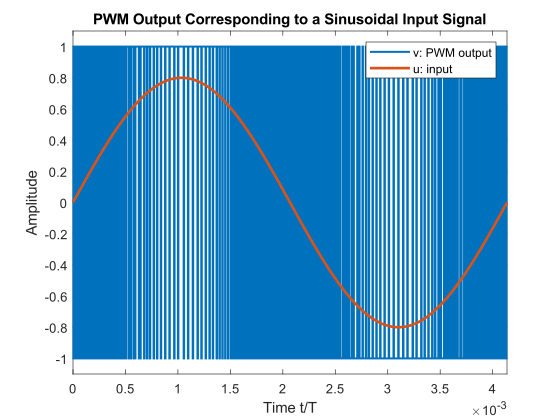
PWM is widely used in various applications due to its efficiency in controlling power and signal transmission. In audio applications, PWM is employed in Class-D amplifiers, where the modulated signal directly drives the speaker. It is also utilized in digital-to-analog conversion (DAC), particularly in pulse-density modulation (PDM)-based systems like DSD (Direct Stream Digital) audio. Furthermore, PWM plays a crucial role in motor control and power regulation, enabling precise adjustments in speed and energy efficiency.
5 Switched Capacitor
Switched capacitor (SC) circuits play a fundamental role in modern mixed-signal systems, particularly in the implementation of high-performance ADCs. By replacing traditional resistors with switches and capacitors, SC circuits offer precise and controllable analog signal processing using standard CMOS technology. This makes them highly suitable for integration in low-power, high-accuracy applications.
The core principle of a switched capacitor circuit is based on the controlled transfer of charge between capacitors through electronic switches. These switches are typically driven by non-overlapping clock phases that define the sampling (track) and holding intervals. During the track phase, the switch closes, allowing the capacitor to sample and store the input voltage. Once the switch opens (hold phase), the stored charge represents the sampled value, which can then be processed or transferred further along the signal chain. This sample-and-hold functionality is a critical building block for discrete-time signal processing.
In essence, switched capacitor circuits emulate the behavior of resistors by controlling the rate at which charge is moved between nodes. The equivalent resistance is determined by the capacitance value and the switching frequency. As a result, SC circuits provide highly accurate and stable performance that is less sensitive to process variations, temperature, and voltage changes compared to traditional resistor-based circuits.
Switched capacitor techniques are widely employed in integrators, filters, and analog-to-digital conversion stages, such as the integrator loops of Sigma-Delta ADCs. These circuits benefit from their compatibility with digital control logic, making them an essential component in modern integrated circuit design.
5.1 Clock Phases in Switched Capacitor Circuits
Switched capacitor circuits rely heavily on precise timing signals to control the switching events. Typically, two non-overlapping clock signals, denoted as Φ₁ and Φ₂, are used to drive the switches. These two clock phases ensure that switches are never simultaneously closed, which would otherwise create short circuits and result in charge sharing errors.
5.1.1 Non-overlapping Clock Phases
In Figure 1, the basic waveforms of Φ₁ and Φ₂ are shown. Φ₁ is high during one period while Φ₂ remains low. After Φ₁ transitions to low, Φ₂ becomes high. This non-overlapping behavior is essential for reliable charge transfer in switched capacitor circuits.
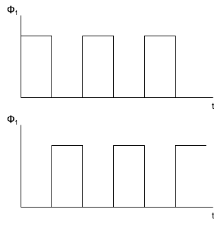
Figure 1: Non-overlapping clock phases Φ₁ and Φ₂.
These clock phases alternate, controlling the sampling and transfer of charge between nodes. The duration of the clock period and its frequency directly affect the equivalent resistance of the switched capacitor circuit. Specifically, the equivalent resistance R_eq can be described as:
\[ R_{eq} = \frac{1}{f \cdot C} \]
Where f is the clock frequency, and C is the value of the switched capacitor.
5.2 Timing Diagrams for Switched Capacitor Operation
Understanding the timing behavior of Φ₁ and Φ₂ in different clocking schemes is essential for accurate circuit operation. In Figure 2, we see an extended timing diagram of Φ₁ and Φ₂ that emphasizes their non-overlapping nature over multiple cycles.
This timing control prevents both switches from conducting at the same time, thereby avoiding charge injection errors and signal corruption. Such precision in clock phase control is a defining feature of CMOS-based SC implementations.
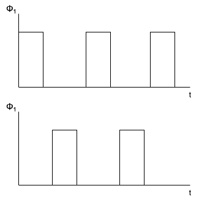
Figure 2: Timing diagram of non-overlapping clock phases Φ₁ and Φ₂ over multiple cycles.
The rise and fall times, as well as the phase separation, are carefully designed in modern integrated circuits to minimize clock feedthrough and other non-ideal effects.
5.3 Basic Switched Capacitor Circuit Operation
The simplest switched capacitor circuit, as shown in Figure 3, consists of two switches and one capacitor. This configuration serves as a charge pump, moving charge from an input node to an output node in discrete time intervals controlled by the clock phases Φ₁ and Φ₂.
5.3.1 Operating Principle
- During Φ₁, switch S₁ is closed, allowing the capacitor C₁ to charge up to the input voltage V₁.
- During Φ₂, switch S₁ opens and switch S₂ closes, transferring the stored charge from the capacitor to the output node V₂.
This charge transfer process effectively samples the input signal and transfers its equivalent charge to the next stage. The circuit emulates the behavior of a resistor by relating the transferred charge to the voltage difference and the switching frequency.
The operation of this circuit can be explained using charge conservation:
\[ Q = C \cdot V \]
The charge transferred per cycle depends on the input voltage and the capacitance, while the average current is given by:
\[ I_{avg} = \frac{Q}{T} = C \cdot V \cdot f \]
This explains how the circuit behaves like a resistor with resistance 1 / (C · f).
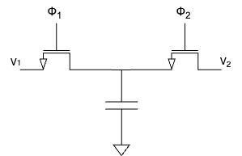
Figure 3: Basic switched capacitor circuit with two switches and one capacitor.
By employing non-overlapping clock signals and discrete charge sampling, SC circuits successfully replicate the behavior of passive resistor networks in integrated circuits.
Such designs form the foundation of analog filters, integrators, and ADC building blocks, especially in Sigma-Delta modulation schemes. Understanding these fundamentals allows for the design and implementation of low-power, high-precision, and scalable analog signal processing systems.
5.4 Area Efficiency and Frequency Control in Switched Capacitor Circuits
One of the main challenges is implementing large and accurate resistances without consuming excessive silicon area. Unlike continuous-time RC filters, which require physically large resistors to achieve low-frequency operation, switched capacitor circuits can emulate resistances through controlled charge transfer, depending only on the clock frequency and the capacitor value. This technique allows designers to achieve high accuracy and area efficiency.
The schematic shown in Figure X illustrates a basic switched capacitor structure controlled by non-overlapping clock phases Φ₁ and Φ₂. During Φ₁, the capacitor is connected to the input, allowing it to charge. During Φ₂, the charge is transferred to the output. This operation is equivalent to moving discrete packets of charge, simulating the current that would flow through a resistor.
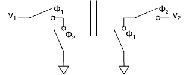
Figure X: Conceptual diagram of a switched capacitor.
One of the most valuable properties of switched capacitor circuits is that their equivalent resistance is defined by:
\[ R_{eq} = \frac{1}{C \cdot f} \]
Where C is the capacitance and f is the switching frequency. This makes the resistance predictable and easily tunable by simply adjusting the clock frequency, without relying on process-sensitive resistor fabrication.
The area savings come from the fact that capacitors generally occupy less silicon area than high-value resistors. Additionally, the matching between capacitors is typically better than the matching between resistors, resulting in more stable and accurate circuit behavior. These advantages make switched capacitor circuits ideal for applications such as integrators in Sigma-Delta ADCs, switched capacitor filters, and precision analog signal processing.
Finally, because the resistance value depends entirely on the switching frequency and capacitance, designers can dynamically modify a filter’s frequency response by changing the clock rate, providing additional flexibility in system design.
6 LTSpice Simulation of an Idealized Second-Order Sigma-Delta Modulator
In this section, the behavior of an idealized second-order Sigma-Delta (ΔΣ) modulator is demonstrated using an LTSpice simulation. The purpose of this simulation is to validate the fundamental operation of the switched capacitor stages and integrator loops prior to implementing a more realistic circuit.
The model consists of two cascaded switched capacitor integrator stages, followed by a comparator and a digital feedback path. The switched capacitor stages are configured to emulate integrators, where the charge transfer mechanism accurately models the behavior of continuous-time integrators in a discrete-time domain.
The schematic shown in Figure X represents the complete simulation setup implemented in LTSpice. The primary blocks in this design are: - Switched Capacitor Integrators: Each integrator is implemented using an ideal operational amplifier model and switched capacitors that mimic charge transfer. The capacitors Cs1/Ci1 and Cs2/Ci2 define the integrator characteristics and influence the loop filter coefficients. - Clock Phases (Φ₁ and Φ₂): Two non-overlapping clock signals control the timing of the switches. These clock signals are generated by voltage sources modeled as pulse generators in LTSpice, ensuring the correct timing and preventing overlap, which is critical to avoid signal corruption. - Comparator: An ideal comparator converts the analog output of the second integrator stage into a digital logic level. - Feedback Path: The output of the comparator is fed back into the modulator, closing the loop. The feedback ensures stability and noise shaping, both characteristic behaviors of ΣΔ modulators. - D Flip-Flop: The comparator output passes through a D Flip-Flop to synchronize the output with the system clock, ensuring stable digital outputs.
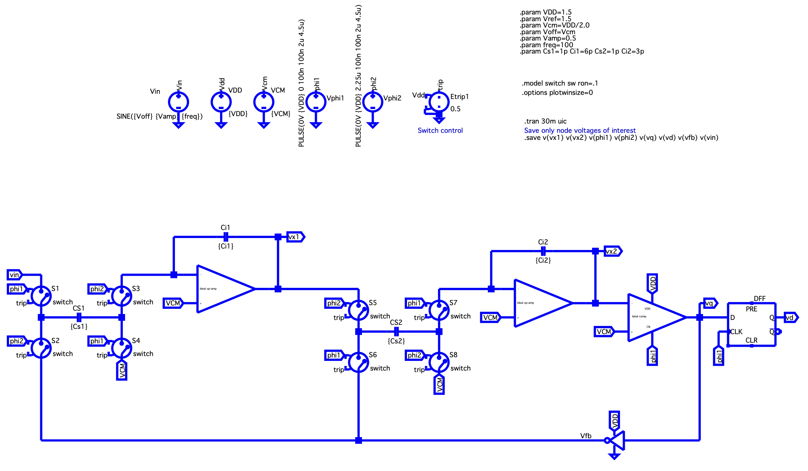
Figure X: LTSpice simulation schematic of an idealized second-order Sigma-Delta modulator.
6.1 Key Components and Operation
Clock Phase Control: The simulation uses ideal switches controlled by two non-overlapping clock phases Φ₁ and Φ₂ at a frequency of 220 kHz. These clocks are modeled with pulse generators and are configured to ensure there is no overlap. This guarantees that charge transfer occurs without any unintended charge sharing or signal corruption.
Switched Capacitor Stages: Each switched capacitor stage consists of: - Sampling capacitors Cs1 and Cs2. - Integration capacitors Ci1 and Ci2. - A set of four switches per stage that perform the sampling and integration steps.
The switched capacitor integrators convert the input voltage signal into a charge packet transferred at each clock cycle. This process allows the integrator stages to perform accurate discrete-time integration, critical for the loop filter performance in a ΣΔ modulator.
Operational Amplifiers: The integrators are idealized as operational transconductance amplifiers (OTAs), realized in LTSpice as voltage-controlled current sources. In the ideal model, the OTA provides a linear response across the full input range. In practical designs, care must be taken to ensure that the OTA does not enter saturation, which would otherwise violate the assumptions made in this idealized simulation.
Comparator and Feedback: The second integrator’s output is connected to an ideal comparator. Its digital output is fed back through the feedback path to both integrator stages. This feedback enforces the quantization noise shaping inherent to ΣΔ modulators.
Simulation Setup: The simulation parameters include: - Power supply voltage VDD = 1.5 V - Common-mode voltage VCM = 0.75 V - Input signal: A sine wave with an amplitude of 0.5 V centered at VCM - Capacitor values: - Cs1 = 1 pF, Ci1 = 6 pF - Cs2 = 1 pF, Ci2 = 3 pF
The transient simulation runs for 30 ms, capturing all relevant node voltages such as vx1, vx2, vq, and vd.
This LTSpice simulation demonstrates the core functionality of an idealized second-order Sigma-Delta modulator, including: - Precise clock phase control to prevent signal corruption. - Switched capacitor integrator stages emulating discrete-time integration. - Quantization feedback ensuring noise shaping and high-resolution analog-to-digital conversion.
This model serves as a foundation for developing more realistic circuits, where non-idealities such as switch resistance, parasitic capacitance, and finite OTA gain are considered.
6.2 Output Signals of the First and Second Integrator Stages
Following the LTSpice simulation of the idealized second-order Sigma-Delta modulator, the voltage outputs of the first and second integrator stages were analyzed. These signals provide crucial insight into the operation and dynamic behavior of the modulator’s loop filter.
The voltage waveform V(vx1) represents the output of the first integrator, while V(vx2) corresponds to the output of the second integrator. Both signals are critical in understanding the internal signal processing and how the modulator shapes the quantization noise.
6.2.1 Integrator 1 Output - V(vx1)
The output of the first integrator, V(vx1), shows the integration of the input signal combined with the feedback from the quantizer. The integrator accumulates charge, resulting in a signal that closely follows the low-frequency components of the input while reacting to the feedback signal to suppress quantization noise within the signal band.
The waveform of V(vx1) demonstrates: - A smoother signal profile compared to the input, due to its integration function. - Oscillations introduced by the feedback loop as the system attempts to keep the quantization error shaped and controlled.
6.2.2 Integrator 2 Output - V(vx2)
The output of the second integrator, V(vx2), exhibits an even higher degree of integration. It represents the second accumulation in the cascade, further enhancing the low-pass filtering effect of the loop filter. This output typically shows: - A stronger suppression of high-frequency components. - More pronounced signal swings, as the second integrator amplifies the difference between the first integrator’s output and the feedback signal from the comparator.
The dynamic range of V(vx2) is larger than that of V(vx1), illustrating the additional integration stage’s impact. The output of the second integrator directly feeds into the quantizer (comparator), making its behavior essential to achieving the desired noise shaping properties.
6.2.3 Output Waveforms Visualization
The time-domain waveforms for both integrator outputs are shown in Figure X below. The x-axis represents the simulation time (0 ms to 30 ms), while the y-axis represents the output voltages of the two integrators. The distinct differences in the signal shapes illustrate the successive integration performed by each stage.
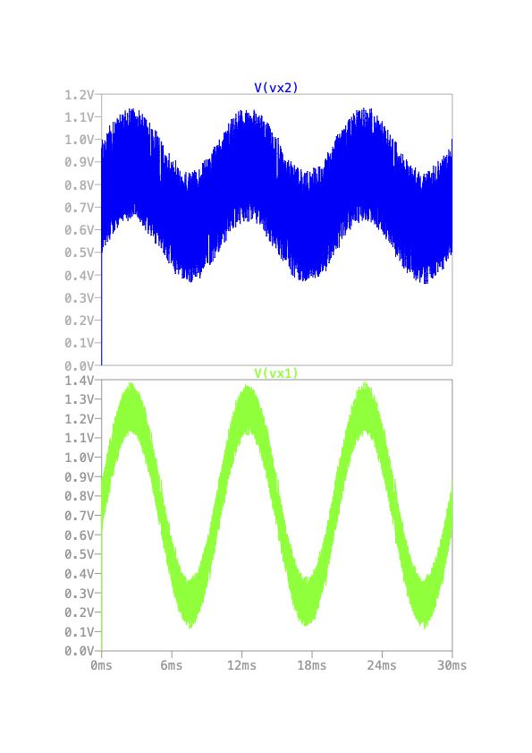
Figure X: LTSpice simulation results showing the outputs of the first integrator V(vx1) and second integrator V(vx2).
6.2.4 Interpretation of Results
The key observations from these output signals are: - The first integrator output V(vx1) follows the integrated input and feedback signals, acting as the first stage of the loop filter.
The second integrator output V(vx2) provides a deeper integration, smoothing out the signal further and preparing it for quantization.
Both outputs confirm the correct operation of the switched capacitor integrator stages and validate the simulation model.
The correct functioning of these integrators is fundamental to ensuring the modulator shapes quantization noise effectively. In a practical implementation, the design of these integrators would have to consider non-idealities such as finite OTA gain, thermal noise, and parasitic capacitances. However, for this idealized simulation, the results closely match the expected theoretical behavior.